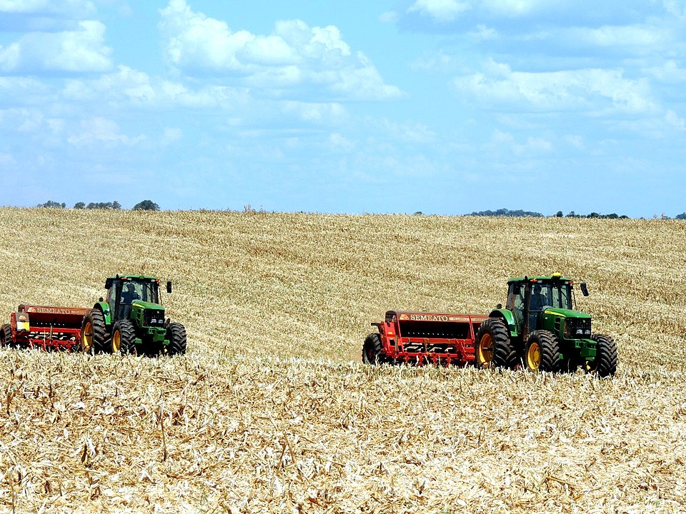
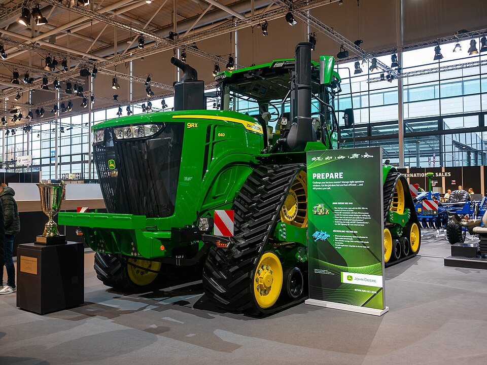

- Agro forte, futuro sustentável
- Equilíbrio entre produção e meio ambiente
O biodiesel é um combustível renovável produzido a partir de óleos vegetais e gorduras animais, sendo uma alternativa ao diesel derivado do petróleo. No agronegócio ele é utilizado para movimentar máquinas agrícolas, caminhões e equipamentos, contribuindo para uma produção mais sustentável.
Além dos benefícios ambientais, o biodiesel também fortalece a economia do campo, pois sua produção gera empregos e valoriza produtos agrícolas utilizados como matéria-prima.
O uso do biodiesel no agro contribui para uma produção mais sustentável, pois é uma fonte de energia renovável e menos poluente. Apesar dos benefícios ambientais, a necessidade de investimentos e os custos de produção ainda representam desafios.
Entre as principais vantagens do biodiesel está a redução da emissão de poluentes e gases de efeito estufa, além de diminuir a dependência de combustíveis fósseis. Sua produção também fortalece a economia rural, gerando empregos e agregando valor às matérias-primas agrícolas.

Por outro lado, o biodiesel apresenta alguns desafios. Seu custo de produção pode ser mais elevado que o do diesel comum, principalmente quando há aumento no preço das matérias-primas utilizadas. Além disso, a expansão do seu uso exige investimentos em infraestrutura, transporte e armazenamento adequados.
Mesmo com esses desafios, o biodiesel vem ganhando espaço devido à crescente preocupação com a preservação do meio ambiente e a sustentabilidade.
